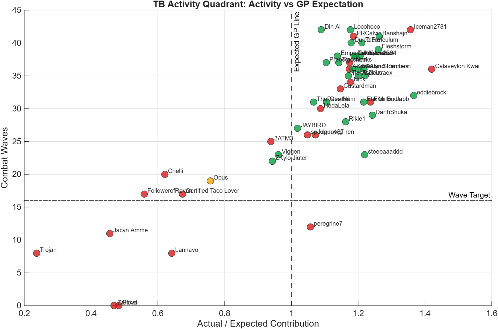
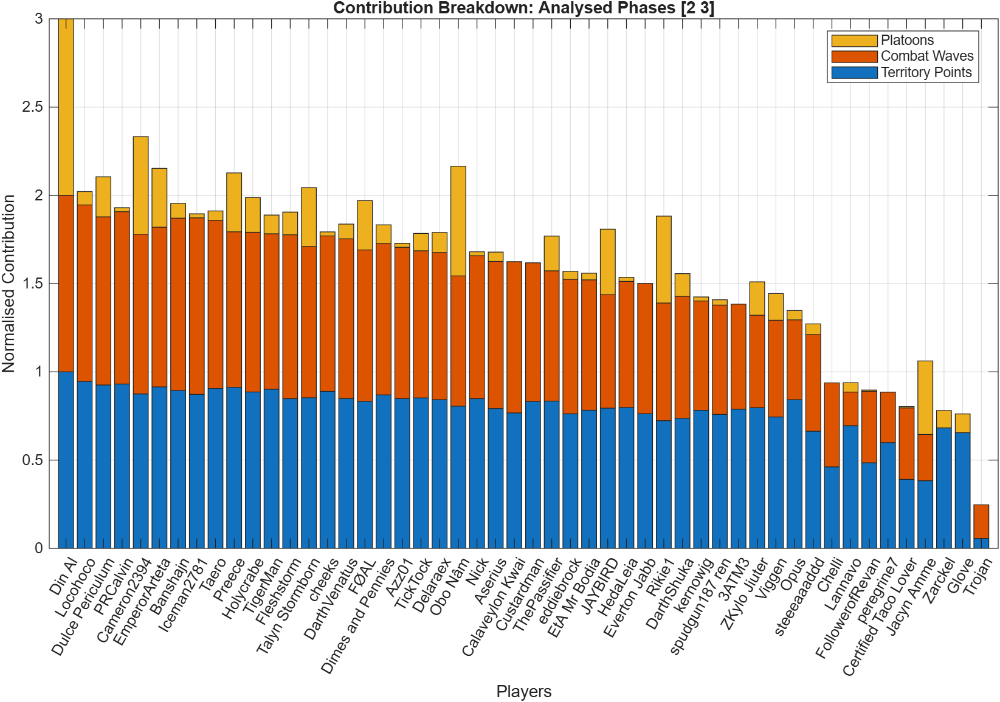

OANR Territory Battle
TB Report
Generated 2026-08-20 18:52. Analysed phases [2 3]. Detected phases [1 2 3 4 5 6].
phase activity: P2 Waves; P3 WavesWave target: 16Platoon floor: 5
28Green
1Amber
21Red
Activity Quadrant

Best quick read: right side is above GP expectation, top side is activity.
Phase Momentum

Shows whether the guild is accelerating, fading, or missing deployment windows.
Contribution Breakdown

Shows each player contribution split between points, waves, and platoons.
Efficiency Bubble

Bubble size follows waves, colour follows efficiency band.
Activity Watchlist
| Name | RiskGroup | RiskReason | Priority | Missed | Waves | PlatoonUnits | RogueActions | ExpectedRatio |
|---|---|---|---|---|---|---|---|---|
| Trojan | Red | missed deploy, low waves, low platoons | 6 | 1 | 8 | 0 | 0 | 0.237 |
| Jacyn Amme | Red | missed deploy, low waves | 5 | 1 | 11 | 55 | 0 | 0.456 |
| peregrine7 | Red | low waves, low platoons | 3 | 0 | 12 | 0 | 0 | 1.057 |
| Zarckel | Red | low waves | 2 | 0 | 0 | 13 | 0 | 0.469 |
| Glove | Red | low waves | 2 | 0 | 0 | 14 | 0 | 0.483 |
| Lannavo | Red | low waves | 2 | 0 | 8 | 7 | 0 | 0.642 |
| FollowerofRevan | Red | low platoons | 1 | 0 | 17 | 1 | 0 | 0.559 |
| Chelli | Red | low platoons | 1 | 0 | 20 | 0 | 0 | 0.621 |
| Certified Taco Lover | Red | low platoons | 1 | 0 | 17 | 1 | 0 | 0.674 |
| Opus | Amber | acceptable activity, below expected GP | 1 | 0 | 19 | 7 | 0 | 0.757 |
| 3ATM3 | Red | low platoons | 1 | 0 | 25 | 0 | 0 | 0.939 |
| spudgun187 ren | Red | low platoons | 1 | 0 | 26 | 4 | 0 | 1.048 |
| kernowjg | Red | low platoons | 1 | 0 | 26 | 3 | 0 | 1.072 |
| HedaLeia | Red | low platoons | 1 | 0 | 30 | 3 | 0 | 1.087 |
| Custardman | Red | low platoons | 1 | 0 | 33 | 0 | 0 | 1.146 |
| Azz01 | Red | low platoons | 1 | 0 | 36 | 3 | 0 | 1.173 |
Top Contributors
| Name | RiskGroup | Score | Points | Waves | PlatoonUnits | RogueActions |
|---|---|---|---|---|---|---|
| Din Al | Green | 1 | 40642901 | 42 | 132 | 0 |
| Locohoco | Green | 0.883 | 38428247 | 42 | 10 | 0 |
| Dulce Periculum | Green | 0.868 | 37620331 | 40 | 30 | 0 |
| PRCalvin | Red | 0.861 | 37841952 | 41 | 3 | 0 |
| Cameron2394 | Green | 0.856 | 35546042 | 38 | 73 | 0 |
| EmperorArteta | Green | 0.852 | 37179283 | 38 | 44 | 0 |
| Banshajn | Green | 0.850 | 36356550 | 41 | 11 | 0 |
| Iceman2781 | Red | 0.845 | 35463034 | 42 | 3 | 0 |
| Taero | Green | 0.842 | 36826116 | 40 | 7 | 0 |
| Preece | Green | 0.840 | 37087408 | 37 | 44 | 0 |
Phase Summary
| Phase | Points M | Waves | Avg Waves | DeployedPlayers | Missed | Deployed GP |
|---|---|---|---|---|---|---|
| 2 | 750.787 | 713 | 14.260 | 46 | 0 | 631037347 |
| 3 | 821.084 | 756 | 15.120 | 48 | 2 | 659997343 |
Generated Files
- TB_Player_Summary.csv
- TB_Follow_Up_List.csv
- TB_Phase_Summary.csv
- TB_Report.txt
- PNG chart pack